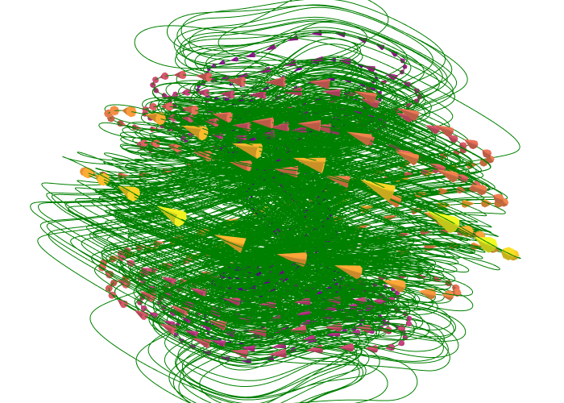

About Author
23
CV/Resume

Javed Arshad Butt - Master Thesis
Twitter
Facebook
LinkedIn
Cover
Good Manners
Acknowledgments
Declaration of independent authorship
Task defintion
Abstract
Abbreviations
Introduction
1
Introduction
2
Motivation
3
State of the art
4
Cluster-based Network Modeling (CNM)
Methodology
5
Methodology
6
CNMc’s data and workflow
7
Data generation
8
Clustering
9
Tracking
10
Modeling
Results
11
Results
12
Tracking results
13
CPE modeling results
14
Transition properties modeling
15
Transition property regression models
16
CNMc predictions
Conclusion & Outlook
17
Conclusion and outlook
18
Zusammenfassung auf Deutsch
19
References
Additionals 2 Thesis
20
Modification to the original thesis and source code
21
Original PDF master thesis
About Author
22
About the author
23
CV/Resume
License
24
Mentioning
25
Copy of licenses
26
Released under license
Appendices
A
Further implemented dynamical systems
B
Some basics about chaotic systems
Table of contents
23.1
CV in English
23.2
Lebenslauf auf Detusch
23
CV/Resume
23.1
CV in English
23.2
Lebenslauf auf Detusch
22
About the author
24
Mentioning